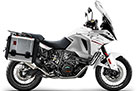

НОВОСТИ
 | 23 января 2017 года АКЦИЯ НА СЕРВИСНОЕ ОБСЛУЖИВАНИЕ КТМ С 16 января до 28 февраля 2017 года в официальном дилерском центре КТМ на Красноткацкой, 76 проходит сервисная акция по обслуживанию и ремонту мотоциклов КТМ с выгодой до 20% | |
16-я ПОБЕДА В DAKAR НА СЧЕТУ КТМ Sam Sunderland возглавил тройку гонщиков на КТМ на финишном подиуме Dakar 2017 | ||
|  | 10 декабря 2016 года НОВОЕ ПОКОЛЕНИЕ KTM SUPER ADVENTURE Этой осенью КТМ презентовал несколько версий семейства Super Adventure - модели Super Adventure R, S, и T. Приглашаем Вас познакомиться ближе с этими мотоциклами. | |
18 ноября 2016 года КВИКШИФТЕР KTM: НОВОЕ СЛОВО В ПЕРЕКЛЮЧЕНИИ ПЕРЕДАЧ НА МОТОЦИКЛАХ Скажите слово: «клац». Квикшифтер KTM 1290 Super Duke GT сработает быстрее, чем Вы произнесёте последнюю букву в этом слове. О том, что это такое и как система работает рассказывают спецы из департамента исследований и разработок КТМ. | ||
14 ноября 2016 года KTM - ДОРОГУ DUKE! Обновлённое семейство DUKE презентовали на итальянской выставке EICMA в Милане. | ||
10 октября 2016 года KTM - КОРПОРАЦИЯ ADVENTURE ЧЕТЫРЕ НОВЫХ МОДЕЛИ КТМ НА ПОДИУМАХ ВЫСТАВКИ INTERMOT, КЁЛЬН | ||
23 августа 2016 года ПРОЕКТ RC16 - К ГОНКАМ ГОТОВ! КТМ презентовал новый мотоцикл, разработанный специально для участия в гонках MotoGP. | ||
15 июля 2016 года Штефан Пирер - человек, который возродил КТМ Интервью с вдохновителем и владельцем компании Pierer Industrie AG, которой принадлежит компания КТМ - Штефаном Пирером, взятое авторитетным британским изданием Motorcyclenews. | ||
11 июля 2016 года KTM предупреждает: в Польше совершен угон новой техники Со склада одного из польских официальных дилеров украдены более десятка новых мотоциклов KTM | ||
6 июня 2016 года Скидка на мотоциклы KTM в «КИЙ ТЕХНО МОТО» до 23% Австрийский завод-производитель эксклюзивно для Украины предлагает специальную стоимость... |